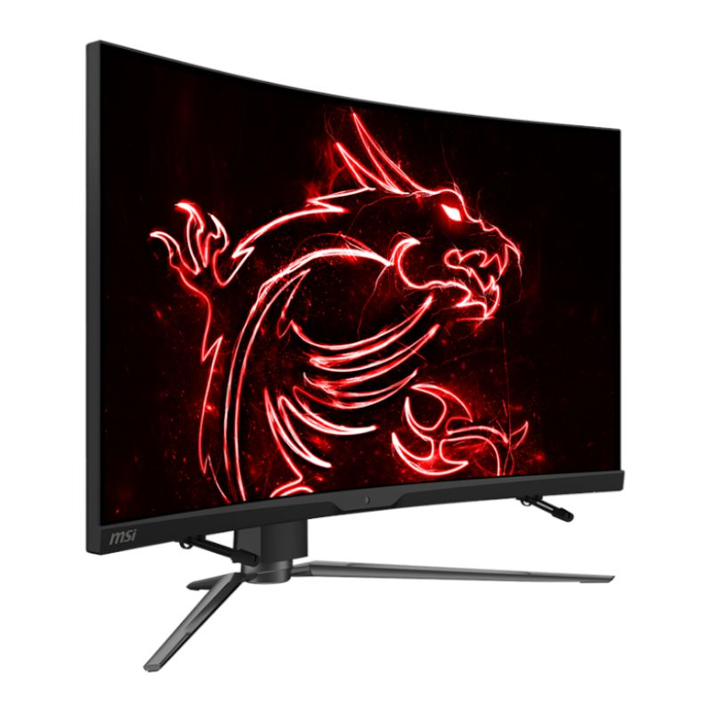
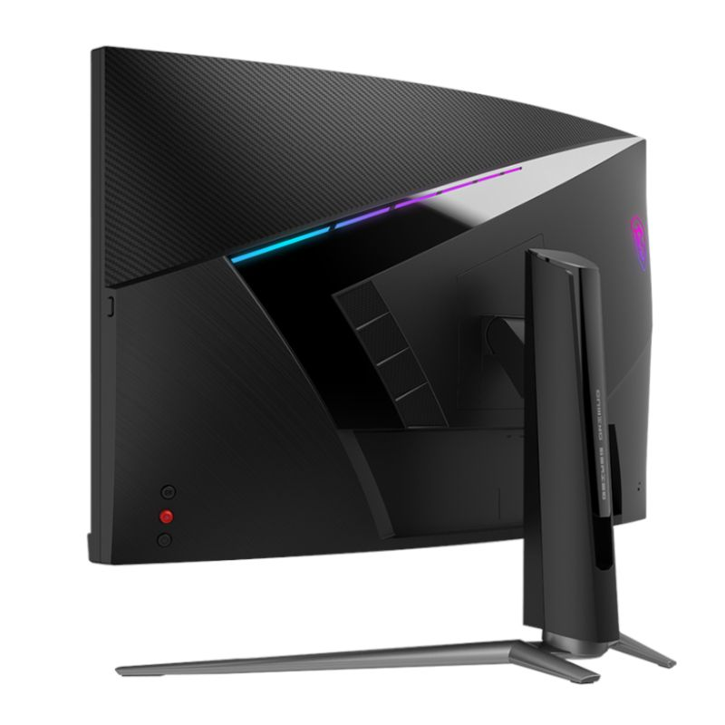
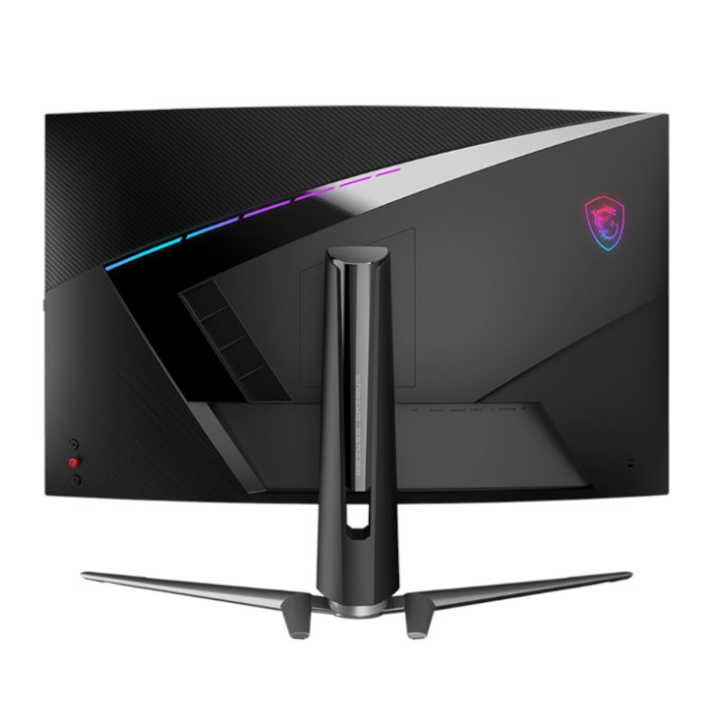
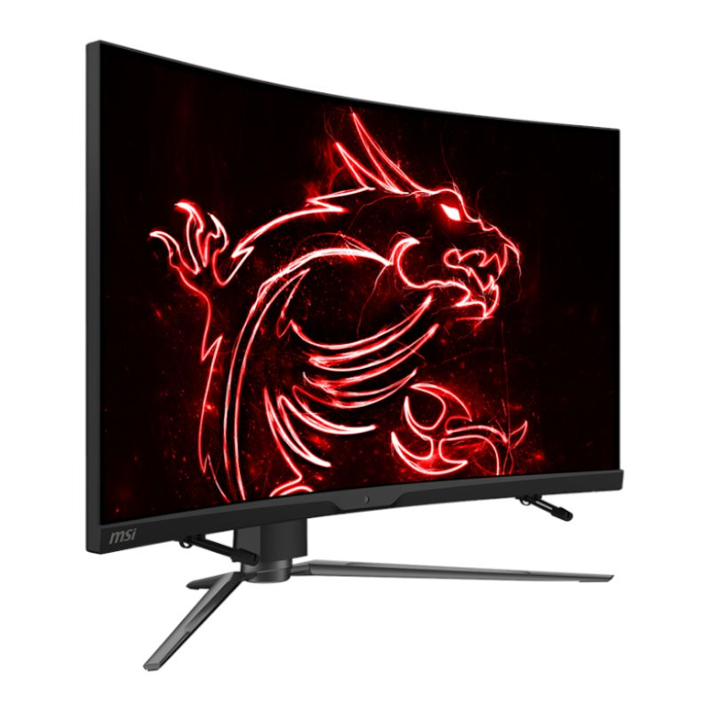
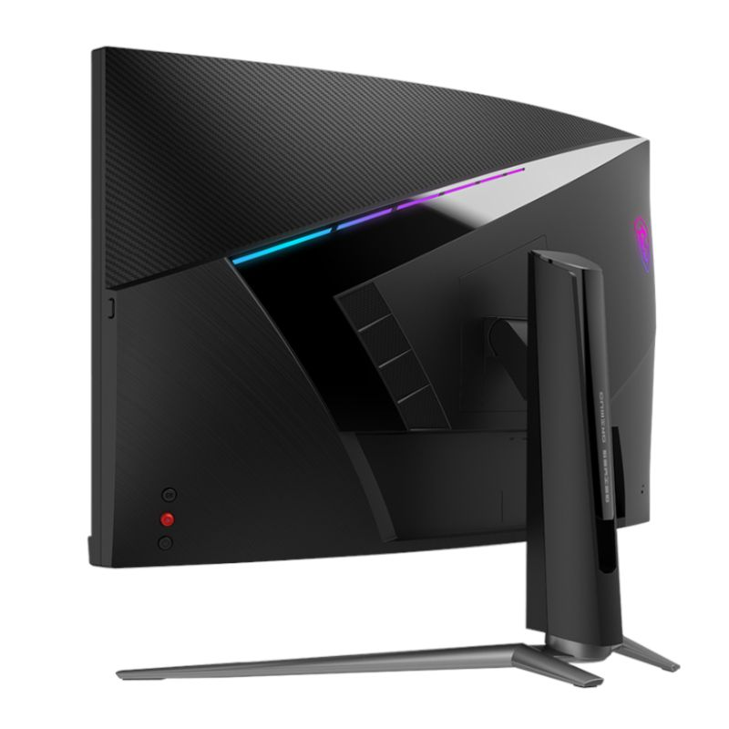
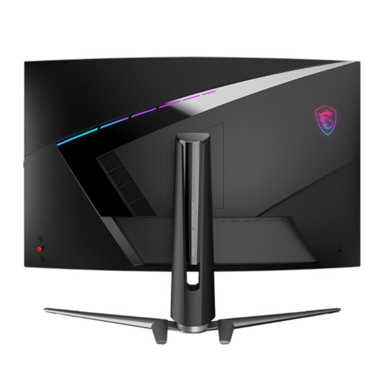

MSI ARTYMIS323CQR 32 1440p VA 165HZ 1ms FHD 1000R
 





Price: R 15,000
The MPG series brings out the best in gamers by allowing full expression in colour with advanced RGB lighting control and synchronization. Experiment on another level of personalization with a front LED strip that provides convenient in-game and real-time notifications. With the MPG series, transform your equipment into the centre of attention and top leaderboards in style. To improve the users' experience, MSI designed a series of smart software based on years of professional experience in research and development of eSports and an understanding of the needs of players. Through smart gaming technologies provided by MSI, including Smart Brightness, Smart Crosshair, Night Vision AI, and Sound Tune.
The MSI ARTYMIS Series adopts the new 1000R curved surface technology, creating the perfect curvature that's closer to the viewing angle of the human eye and reducing the eye fatigue caused by long-term use of the screen. At the same time, it enhances the sense of coverage and immersion, bringing a higher level of gaming experience to you. They also feature a WQHD panel that supports resolutions of up to 2560 1440. This 16:9 panel allows gamers to examine bigger game scenes compared to other traditional FHD panels and put them ahead of other competitors.
MSI ARTYMIS Series Monitors have a high-speed refresh rate of 165Hz, eliminating screen delay time and presenting an extremely smooth screen presentation. With a 1ms response time, users can respond accordingly in games such as first-person shooters and racing games and quickly win with one click. These curved gaming monitors are also equipped with HDR technology that can produce images with more details, and a wider range of colours, and look more similar to what is seen by the human eye when compared to traditional monitors.
With MSI Mystic Light, the MPG ARTYMIS Series gaming monitor lights provide a soft ambient light that can easily be synced with any other Mystic Light-enabled gaming product. Select any of the colours from the palette using your smartphone or the Mystic Light App to match your system style to your taste. Or just turn on Gaming Echo, letting your monitor backlight dance to the music you play on the computer.
FEATURES:
1000R Perfect Curved Screen - Perfectly fits the curvature of the human eye so that you can see the entire screen without any fatigue.
WQHD High Resolution - Game titles will even look better, displaying more details due to the WQHD resolution.
Gaming Intelligence - A new dawn of AI gaming, including Smart Brightness, Smart Crosshair, Night Vision AI, and Sound Tune.
Rapid Boost (165 + 1ms) - Experience smooth gaming with a blazing-fast refresh rate and response time.
HDR400 - It has passed the VESA HDR Display 400 Certification, meaning it can provide a display with the most realistic colours.
Gaming OSD App - Create the ultimate viewing settings for your game.
HDMI CEC Profile Sync- Set up profiles for multiple sets of devices and can automatically detect your settings.
KVM - Control multiple devices via one set of keyboard, mouse, and MSI gaming monitor.
Console Mode- Best solution for console users:
FHD/WQHD@120Hz, 2K Resolution PS5 Optimization.
SPECIFICATIONS:
Panel Size: 31.5 (80 cm)
Active Display Area (mm): 697.344 (H) x 392.256 (V)
Curvature: 1000R
Panel Type: VA
Panel Resolution: 2560 x 1440 (WQHD)
Pixel Pitch (H x V): 0.2724 (H) x 0.2724 (V)
Aspect Ratio: 16:9
Brightness (Nits): 400
Contrast Ratio: 2500:1
DCR: 100000000:1
Signal Frequency: 30~160 KHz(H) / 60~165 Hz(V)
Refresh Rate: 165Hz
Response Time: 1ms (MPRT)
Dynamic Refresh Rate Technology: FreeSync Premium
HDR Support: HDR 400
Video Ports: 1x DP (1.2a), 2x HDMI (2.0b), 1x USB Type-C(DisplayPort Alternative)
USB Ports: 2x USB 2.0 Type A, 1x USB 2.0 Type B
Viewing Angle: 178 (H) / 178 (V)
Surface Treatment: Anti-glare
Display Colours: 1.07B(8bit + FRC)
Power Type: Power Cable
Power Input: 100~240V, 50/60Hz
Adjustment (Tilt): -5 ~ 20
Adjustment (Swivel): -30 ~ 30
Adjustment (Height): 0 ~ 100mm
DCI-P3 / SRGB: 89.8% / 113%
FEATURES:
1000R Perfect Curved Screen - Perfectly fits the curvature of the human eye so that you can see the entire screen without any fatigue.
WQHD High Resolution - Game titles will even look better, displaying more details due to the WQHD resolution.
Gaming Intelligence - A new dawn of AI gaming, including Smart Brightness, Smart Crosshair, Night Vision AI, and Sound Tune.
Rapid Boost (165 + 1ms) - Experience smooth gaming with a blazing-fast refresh rate and response time.
HDR400 - It has passed the VESA HDR Display 400 Certification, meaning it can provide a display with the most realistic colours.
Gaming OSD App - Create the ultimate viewing settings for your game.
HDMI CEC Profile Sync- Set up profiles for multiple sets of devices and can automatically detect your settings.
KVM - Control multiple devices via one set of keyboard, mouse, and MSI gaming monitor.
Console Mode- Best solution for console users:
FHD/WQHD@120Hz, 2K Resolution PS5 Optimization.
SPECIFICATIONS:
Panel Size: 31.5 (80 cm)
Active Display Area (mm): 697.344 (H) x 392.256 (V)
Curvature: 1000R
Panel Type: VA
Panel Resolution: 2560 x 1440 (WQHD)
Pixel Pitch (H x V): 0.2724 (H) x 0.2724 (V)
Aspect Ratio: 16:9
Brightness (Nits): 400
Contrast Ratio: 2500:1
DCR: 100000000:1
Signal Frequency: 30~160 KHz(H) / 60~165 Hz(V)
Refresh Rate: 165Hz
Response Time: 1ms (MPRT)
Dynamic Refresh Rate Technology: FreeSync Premium
HDR Support: HDR 400
Video Ports: 1x DP (1.2a), 2x HDMI (2.0b), 1x USB Type-C(DisplayPort Alternative)
USB Ports: 2x USB 2.0 Type A, 1x USB 2.0 Type B
Viewing Angle: 178 (H) / 178 (V)
Surface Treatment: Anti-glare
Display Colours: 1.07B(8bit + FRC)
Power Type: Power Cable
Power Input: 100~240V, 50/60Hz
Adjustment (Tilt): -5 ~ 20
Adjustment (Swivel): -30 ~ 30
Adjustment (Height): 0 ~ 100mm
DCI-P3 / SRGB: 89.8% / 113%
Show More
| Stock Availability | 50 items in stock |
| Product Barcode | 123456789 |
| Weight | 9000 g |
| Kensington Lock | Yes |
| Frameless Design | Yes |
| VESA Mounting: | 100 x 100 mm |
| Product Dimensions: | 70 x 47.3 x 31.7 cm |